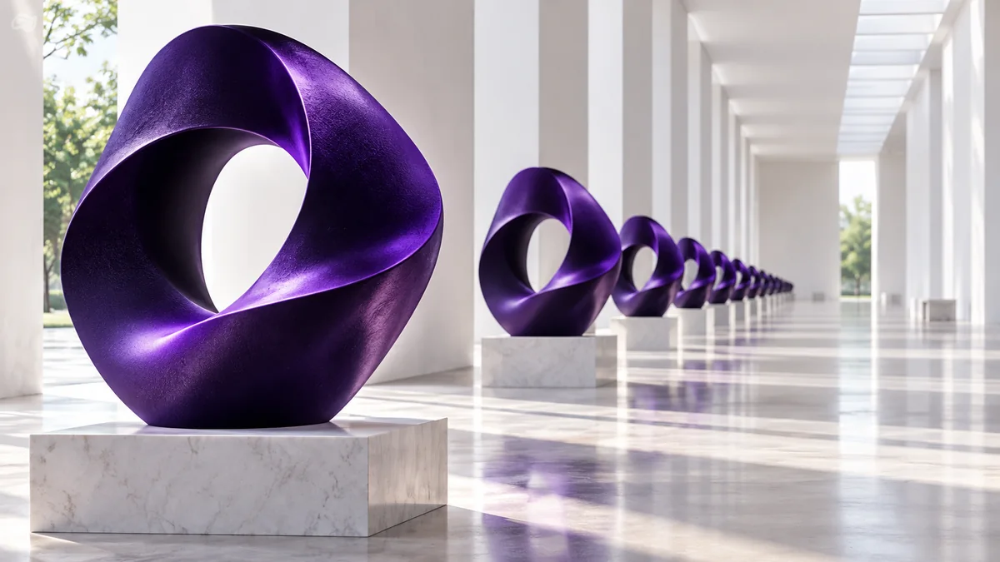

10. Repetir para permanecer disponible en la memoria
Publicar algo una vez no significa que la gente lo recuerde.
Un metaanálisis de Susanne Schmidt y Martin Eisend publicado en Journal of Advertising examinó estudios sobre frecuencia publicitaria.
En los experimentos analizados, ver un anuncio varias veces ayudaba a que las personas lo recordaran mejor.
El recuerdo seguía aumentando hasta alrededor de ocho exposiciones, y la opinión hacia la marca mejoraba hasta cerca de diez exposiciones.
También se encontró algo importante: si pasa demasiado tiempo sin volver a ver el anuncio, parte de ese efecto se pierde.
En términos sencillos:
repetir ayuda a recordar, pero la memoria necesita mantenerse con el tiempo. Una sola exposición suele ser una base muy débil para construir memoria.

Aplicado al PASE
Si el PASE quiere asociarse con:
ayuda académica;
orientación;
acompañamiento;
esas ideas necesitan aparecer repetidamente.
La repetición tampoco significa publicar exactamente la misma imagen una y otra vez.
Puede mantenerse la misma idea con diferentes ejecuciones.
Pregunta por responder
“¿Lo estamos comunicando con suficiente continuidad para que el estudiante pueda recordarlo cuando aparezca la necesidad?”
Referencias
- Schmidt, S., & Eisend, M. (2015). Advertising Repetition: A Meta-Analysis on Effective Frequency in Advertising. Journal of Advertising, 44(4), 415–428. El metaanálisis encontró que el recuerdo continuaba aumentando hasta al menos alrededor de ocho exposiciones en condiciones experimentales y que los efectos de repetición disminuían con el tiempo.